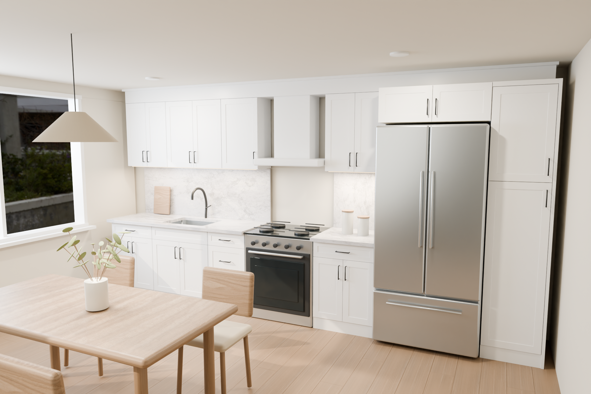

A kitchen built from real cabinet sizes.
Warm oak, honed quartz and soft daylight bring the OPPEIN collection into a furnished kitchen. Explore the materials up close, or rotate the room in 3D.

Drag to rotate · Scroll or pinch to zoom
Cabinets used in this kitchen
Cabinets are placed at their published body dimensions with scale fixed at 1. Handles, toe kicks, finishing panels, countertops, appliances and furnishings are separate scene elements.
Use this scene
Download the 3D room
Download cabinet placement data
Rendered views use Blender’s path-traced lighting. The interactive room uses optimized geometry and an interior lighting environment for responsive browsing.